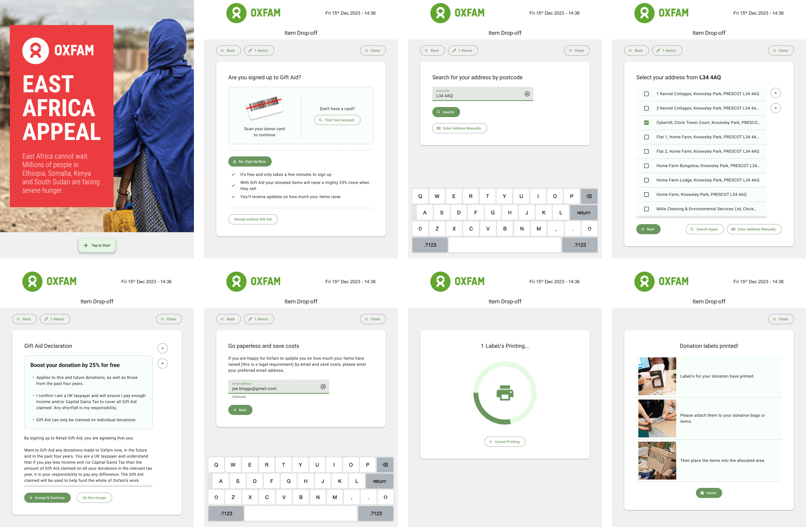

Designing the Donor Station: Streamlining Self-Service for Charities
Early Concept Development
The Donor Station began as a collaborative concept with Cybertill’s CTO and Sales team to explore how self-service donation could be revolutionised. Initial designs were created to demo the idea to larger customers and test on new hardware provided by a partner. These early iterations also served to introduce the concept internally, helping align the company with the project’s potential and vision.

Researching Existing Solutions
When the project officially began, we conducted thorough research on self-service machines already in use. By studying existing UI patterns familiar to users, we aimed to design an interface that felt intuitive and approachable. This research informed many of the decisions for the Donor Station’s functionality and layout.

Creating a Flexible Design Framework
One challenge was designing a system that could function across various hardware types, orientations, and screen sizes. To address this, I developed a grid-based layout adaptable to different configurations. For the MVP, I ensured that the home screen maintained consistency while allowing a level of customisation for larger customers by introducing colour, striking a balance between neutrality and flexibility.

Incorporating Widget-Based Interactions & Key Components
Inspired by smartphone interfaces, for one of the later iterations I proposed a widget-based approach for the Donor Station’s home screen, enabling users to complete tasks quickly and efficiently. Alongside this, I designed key components that supported core donation processes such as dropping off bags, entering donation amounts, logging in or signing up for Gift Aid, and making payments. These components provided the foundation for a seamless user experience while ensuring the design could accommodate various user flows.


Optimising the Home Screen
Using VAS AI, I generated recommendations for an effective home screen layout to ensure the most important apps gained user attention. These designs provided retailers with guidance on optimising their Donor Station setup, ensuring both usability and functionality were prioritised.


Streamlining Repeat Donor Processes
To make repeat donations seamless, we incorporated features like card scanning for quick logins and secure account searches. These features reduced friction in the donation process, encouraging repeat use while maintaining security standards.
Iterative Prototyping & Development
The Bag Drop app and overall Donor Station UI went through extensive wireframing and iterations, informed by feedback from colleagues and customers. Once finalised, the designs were prototyped in Material Design, ensuring a consistent and modern look. These prototypes served as the foundation for development, helping streamline the build process.